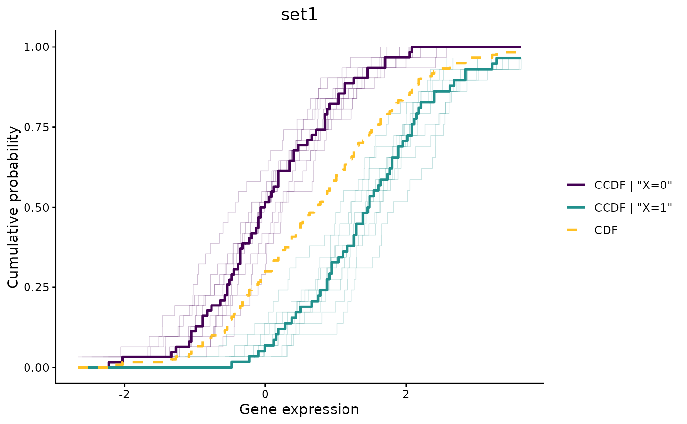
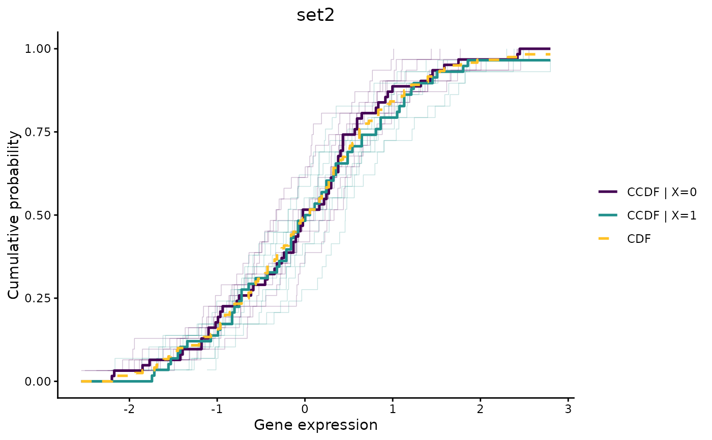
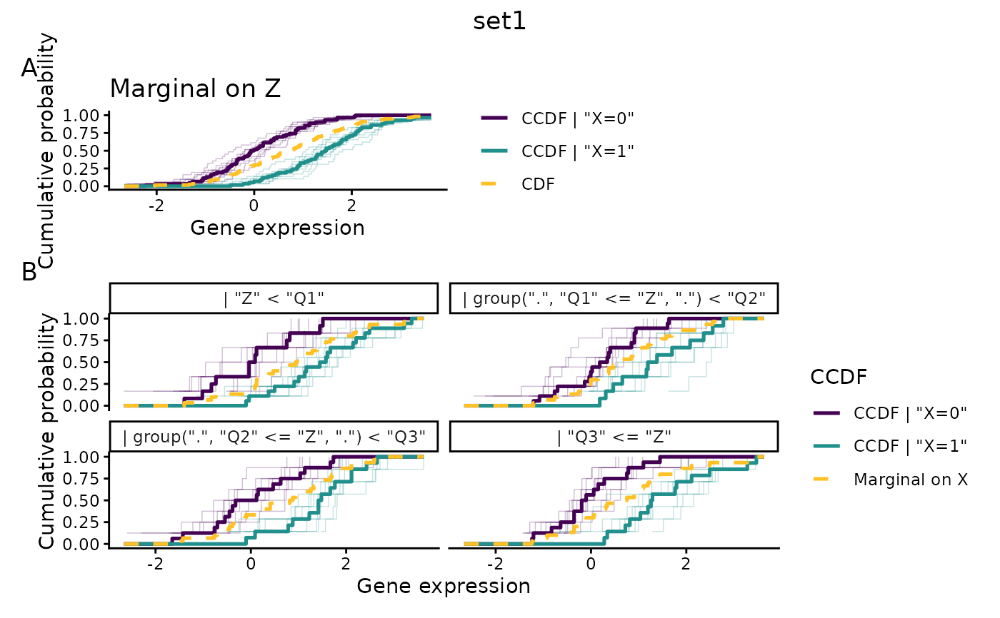
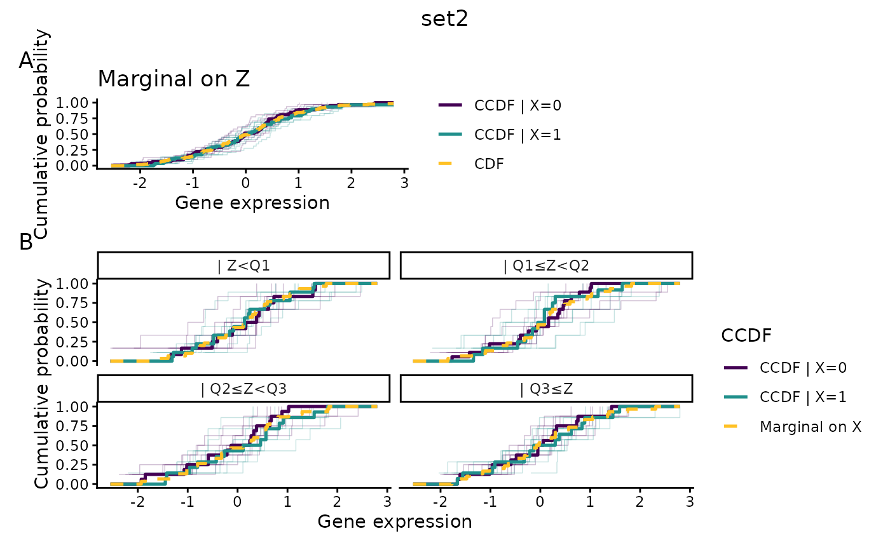

Draws, for one gene set, the conditional CDF of each gene given X
(and Z) as a semi-transparent step function, overlaid with a bold
gene-set summary curve per level of X. Layout, colors, reference
curve and faceting follow plot_compare_ccdf, of which this is
the many-genes counterpart.
Usage
# S3 method for class 'cit_gsa'
plot(
x,
M,
X,
Z = NULL,
geneset,
which_set = 1,
method = c("OLS", "logistic"),
fast = TRUE,
space_y = FALSE,
number_y = 20,
discretize = !is.factor(X[, 1]) || (!is.null(Z) && !is.factor(Z[, 1])),
probs = c(0, 0.25, 0.5, 0.75, 1),
bin_labels = c("Q1", "Q2", "Q3", "Q4"),
summary_fun = stats::median,
alpha = 0.25,
linewidth = 0.9,
n_grid = 200,
...
)Arguments
- x
an object of class
cit_gsa, as returned bycit_gsa.- M
a numeric matrix or data frame of size
n x rcontaining the preprocessed expressions, with gene names as column names. Required:cit_gsa()does not retain the data it was called on.- X
a data frame whose first column is the variable of interest.
- Z
a data frame whose first column is the covariate, or
NULL.- geneset
the gene set to draw: a character vector of gene names, or a named list of such vectors, in which case
which_setpicks one.- which_set
index or name selecting the gene set when
genesetis a list. Default is the first.- method, fast, space_y, number_y
passed to
ccdf.- discretize
a logical flag, following the same logic as in
plot_compare_ccdf: continuous variables are quartile-binned and combined into a single interaction factor, so every curve drawn is an exact empirical CDF. Because a pointwise median of monotonic curves is itself monotonic, the summary curve then needs no monotonicity correction. Default isFALSEwhenX(andZ) are already factors, andTRUEotherwise.- probs, bin_labels
passed to the quartile binning, exactly as in
plot_compare_ccdf.- summary_fun
the function used to summarize across genes at each expression value. Default is
median.- alpha
opacity of the individual gene curves. Default
0.25.- linewidth
width of the summary and reference curves. Default
0.9.- n_grid
number of points on the shared grid used to summarize across genes. Genes in a set do not share expression values, so all curves are re-evaluated on a common grid first. Default
200.- ...
further arguments to be passed.
Value
a ggplot object; when Z is supplied, a
patchwork composition stacking the CCDF given
X alone (panel A) above the CCDF given X and Z
(panel B, faceted by Z).
See also
plot_compare_ccdf for the single-gene version.
Examples
set.seed(123)
n <- 60
X <- data.frame(X = as.factor(rbinom(n, size = 1, prob = 0.5)))
# 20 genes: two sets of 10. Only the genes of set1 depend on X.
M <- matrix(rnorm(n * 20), nrow = n,
dimnames = list(NULL, paste0("g", 1:20)))
M[, 1:10] <- M[, 1:10] + 1.5 * (as.numeric(X$X) - 1)
geneset <- list(set1 = paste0("g", 1:10), set2 = paste0("g", 11:20))
res <- cit_gsa(M = M, X = X, geneset = geneset,
test = "asymptotic", parallel = FALSE)
# set1: the two summary curves separate, and the individual genes with them
plot(res, M = M, X = X, geneset = geneset, which_set = "set1")

# \donttest{
# set2 is null: the two summary curves stay close to each other and to the
# reference CDF
plot(res, M = M, X = X, geneset = geneset, which_set = "set2")

# with a continuous covariate: quartile-binned and faceted by Z
Z <- data.frame(Z = rnorm(n))
plot(res, M = M, X = X, Z = Z, geneset = geneset, which_set = 1)

plot(res, M = M, X = X, Z = Z, geneset = geneset, which_set = 2)

# }